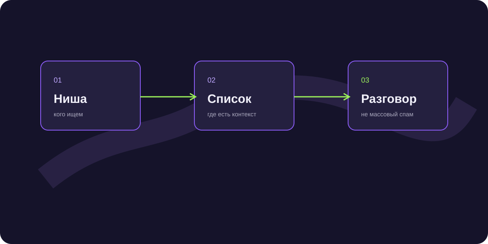

Как найти клиентов в интернете: каналы для B2B
Как найти клиентов в интернете, если универсального канала не существует? Сначала определите, где ваша аудитория уже обсуждает проблему и насколько быстро ей нужен подрядчик.

Короткий ответ
Для B2B работают разные связки: поисковый спрос, экспертный контент, email и Telegram-аутрич, партнёрские рекомендации и реклама. Канал выбирают под роль и задачу.
Поиск и контент
Поисковый трафик подходит аудитории с уже сформулированной потребностью. Статья должна отвечать на вопрос и вести к следующему полезному действию.
Исходящие каналы
Email и Telegram позволяют выбрать сегмент и начать разговор до появления публичного спроса. Здесь особенно важны повод, персонализация и правила остановки.
Партнёрские каналы
Партнёр может приводить клиентов повторно. Но ему нужно объяснить экономику, ответственность и простой способ передать контакт.